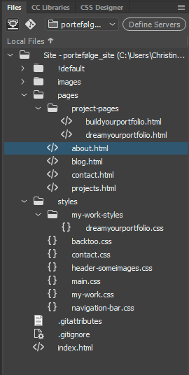

Re-design Your Portfolio
1. semester, flow 5 - eksamensprojekt
flowbeskrivelse

Afterwards I tryed to make the logo for my site. I wanted the colors to be warm and nice to look at. I tryed my way in PhotoshopCC and found out a good alternative until I hopefully will learn how to make great logos in Adobes program Illustrator.